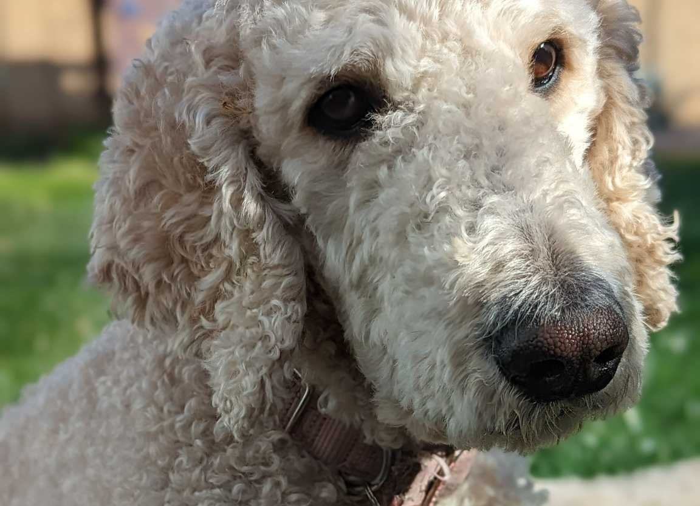
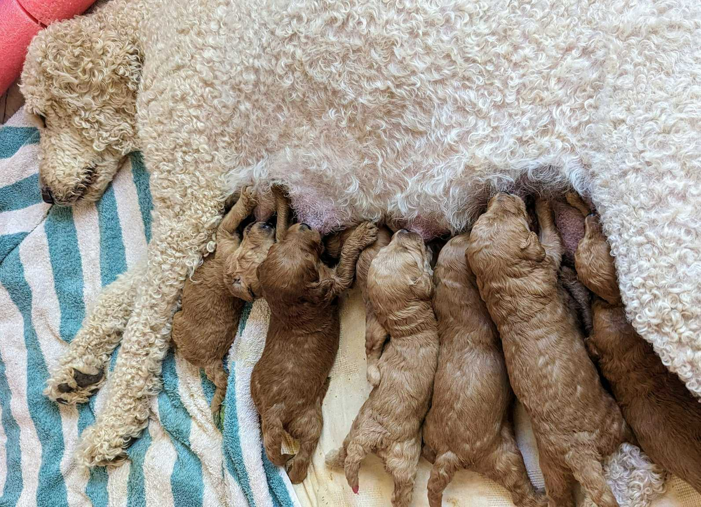
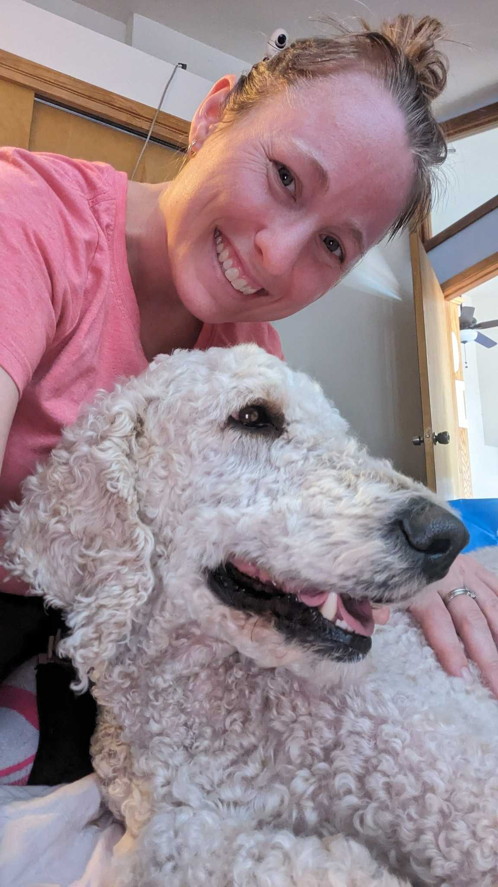
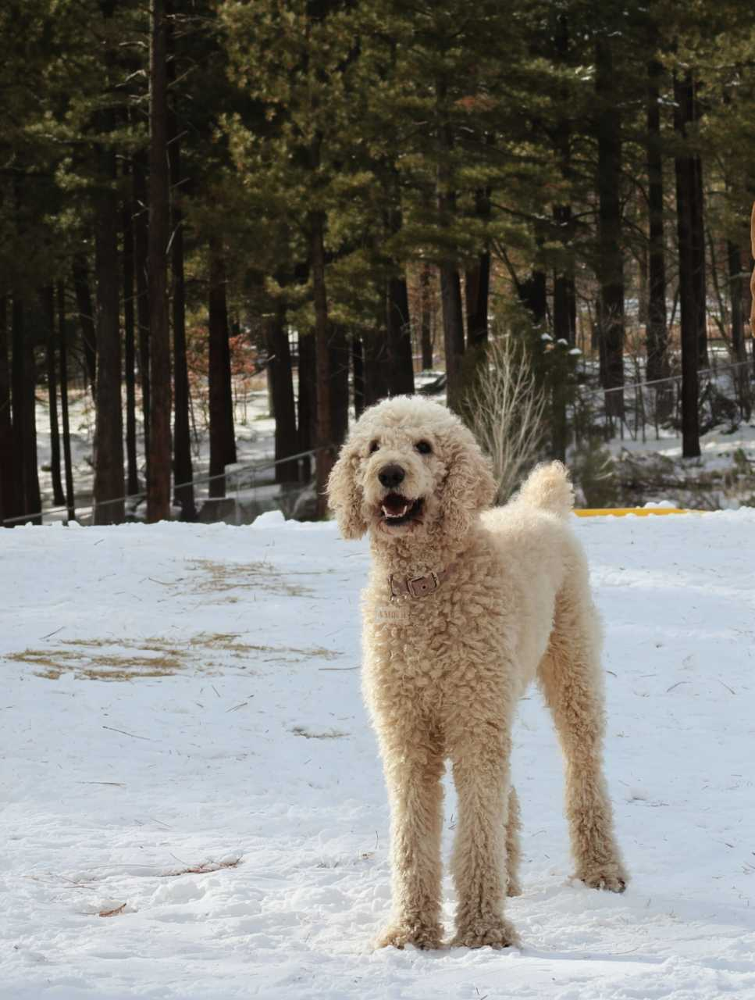

Amber
Amber, our stunning F2B Goldendoodle (19% Golden Retriever and 81% Poodle) weighs 60 lbs and is healthy, active, and completely non-shedding. She possesses a beautiful body structure and expressive eyes that give her a naturally elegant presence. Beyond her striking appearance, she has an incredibly kind, affectionate, and intuitive temperament, making her exceptionally confident and people-focused. She is happiest when she is close to people and consistently brings warmth to everyone she meets. Amber is also fully Embark DNA Health tested and has clear genetics.


Amber has been EMBARK cleared and OFA is pending.
Click
HERE
to see her page.

